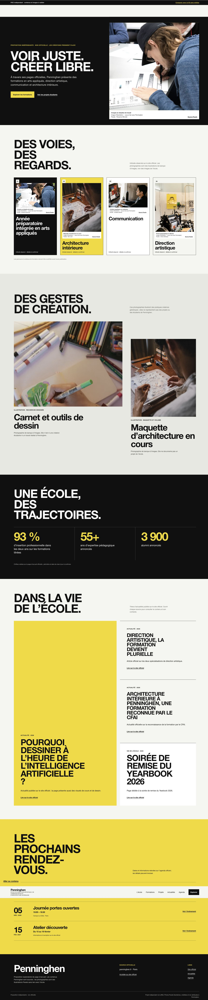
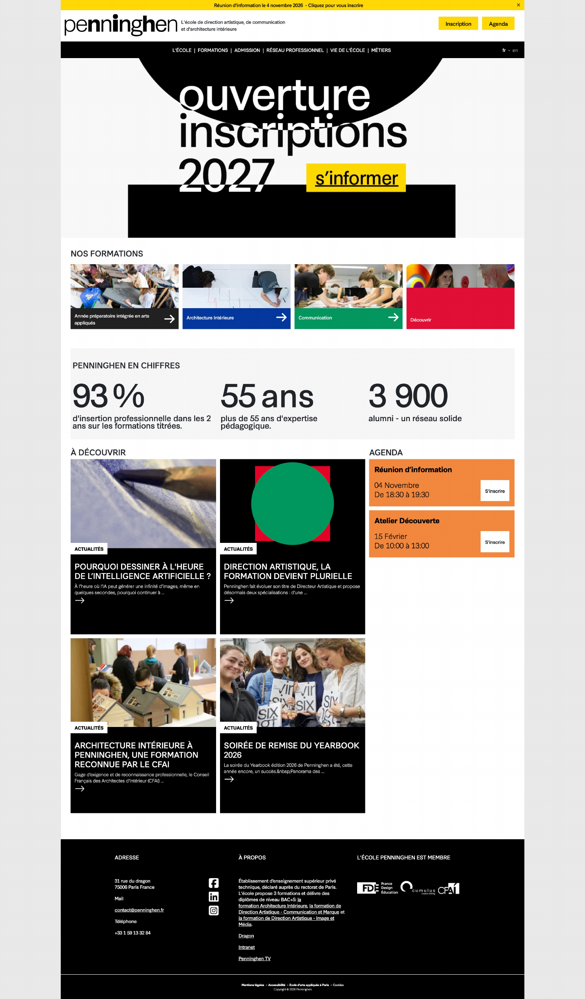
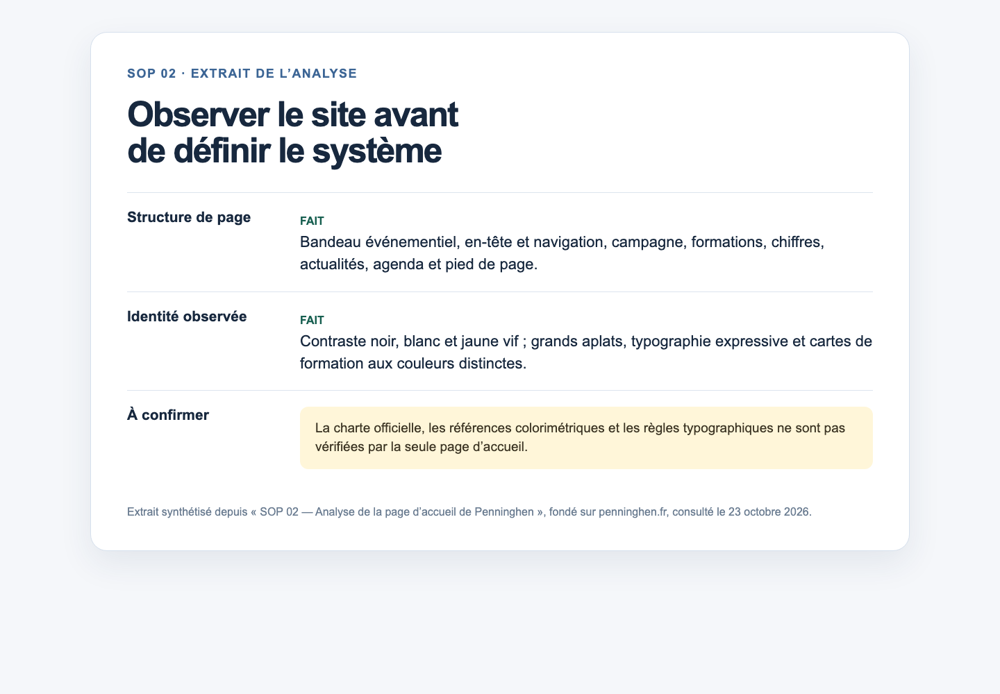
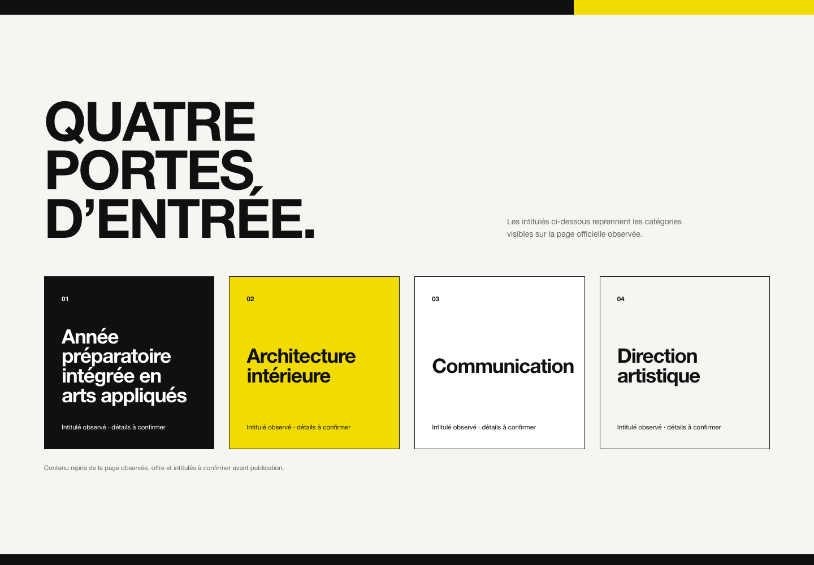
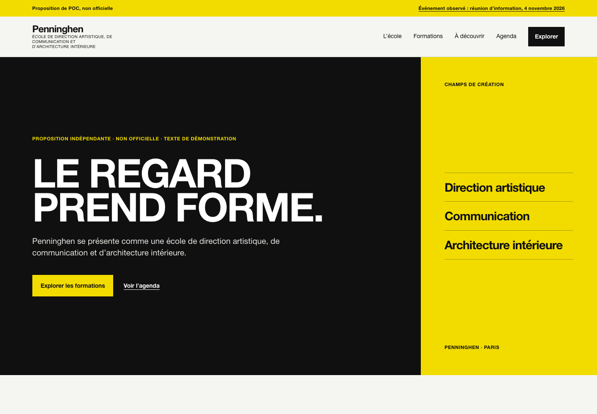

PenninghenLe point de départDéfilement dans le panneau pour tout lire01 / 22
AI WEBSITE FACTORY · CASE STUDY
Une base commune.Des identités différentes.
Comment créer un système de sites réutilisable, sans perdre l'identité de chaque école ?
Multi-brand · Design System · AI Workflow
Exploration personnelle · Penninghen / LISAA / PSB
Design System partagé
02 / 22 · AI WORKFLOW
L’IA produit. Je décide.
L’IA m’aide à explorer et à produire. Je garde la responsabilité des décisions de design.
IA · Codex
- Recherche & benchmark
- Prototypes & composants
- Code & tests
- Audits techniques
Moi · Product Designer
- Objectifs & périmètre
- Choix de design
- Qualité visuelle & UX
- Validation & priorités
Un workflow itératif :
- proposer
- évaluer
- corriger
- retester
03 / 22 · CHOIX DES ÉCOLES
Deux écoles de design. Une école de commerce.
Tester les points communs, les différences et les limites de réutilisation.

04 / 22 · WEBSITE AUDIT
Penninghen — Comprendre avant de concevoir
Premier audit du site existant, assisté par l’IA.
Analyse
- Structure de la page
- Composants récurrents
- Identité visuelle
- Parcours à explorer
Identifier les premières bases du Design System.
05 / 22 · PREMIER PROTOTYPE
Du site existant au premier prototype
Construire une première base de composants avec l’IA.

01 · Analyser
Audit Penninghen
Structure, contenu, identité
Extrait du document SOP 02
02 · Construire
Fondations & composants
Premiers composants visibles dans la V1
La page Foundations autonome n’a pas été retrouvée
Penninghen V1
J’ai produit une première page à faire relire.
La V1 est un vrai prototype HTML. Tu peux la faire défiler ici ou l’ouvrir seule.
Explorer la V1En la regardant comme une expérience, j’ai repéré ce qui manquait.
Défilement indépendant dans la page intégrée · lien plein écran disponible à gauche
07 / 22 · DESIGN REVIEW — V1
Une V1 fonctionnelle, mais trop limitée.
Le problème venait aussi du manque de diversité des composants.
« Pourquoi tous les blocs se ressemblent ? »
08 / 22 · DESIGN REVIEW & ITERATION
Identifier les manques avant de corriger
De la revue de la V1 à des corrections de design plus précises.
« Quels composants manquent ? »
V1 · Avant
V2 · Après
09 / 22 · MEDIA ITERATION
Des placeholders aux vrais visuels
Tester les composants média avec des images d’illustration.
« Et maintenant, quelles images utiliser ? »
Aucun snapshot autonome « V2 avec médias » n’a été retrouvé. À droite : l’état courant après SOP 07B, pas une archive de l’itération média. Les photos Pexels illustrent des activités créatives ; elles ne représentent ni Penninghen ni ses étudiants.
10 / 22 · DESIGN SYSTEM AUDIT · SOP 05
Un Design System visuel… mais est-il solide ?
Les rapports SOP05 ne figurent pas dans les archives retrouvées.
« Et techniquement, est-ce que ça tient la route ? »
Preuve documentaire retrouvée
Preuve ultérieure réellement disponible · SOP 07A · 24 octobre 2026« Le fallback média du Hero prend trop de place quand aucune image n’est fournie. »
Extrait authentique d’un audit ultérieur ; il ne remplace pas les preuves manquantes de SOP 05.
Lire le rapport complet SOP 07A ↗Axes de contrôle demandés en SOP 05
- Valeurs CSS en dur
- Design Tokens et thèmes
- Styles répétés
- Accessibilité et états de focus
Les rapports SOP 05 n’étant pas présents ici, ces axes ne sont pas présentés comme des résultats détaillés de l’audit.
- AuditSOP 05 · rapport non retrouvé
- CorrectionsChangements de code conservés
- Nouvelle vérificationClôture SOP 07B · avec réserves
SOP 06A · ANALYSE MULTI-MARQUES
Une base commune, des besoins différents.
Comparer les besoins de deux écoles avec les composants déjà créés pour Penninghen.
« Est-ce que ma base fonctionne pour d'autres écoles ? »
ÉCOLE D’ART ET DE DESIGN
LISAA
FAIT · repères visibles sur l’accueil
- Filières
- Villes
- Niveaux
- Campus
HYPOTHÈSE · parcours à tester
Explorer les formations
Les filtres et la navigation multi-campus sont des besoins de conception déduits du site, pas validés par des entretiens.
ÉCART DU POC PENNINGHENFiltres et navigation multi-campus
ÉCOLE DE COMMERCE
Paris School of Business
FAIT · repères visibles sur l’accueil
- Programmes
- Admissions
- Accréditations
- Alumni
HYPOTHÈSE · parcours à tester
Choisir un programme et candidater
Le parcours d’admission et les preuves de réassurance sont des pistes déduites de la hiérarchie éditoriale publique.
ÉCART DU POC PENNINGHENParcours d’admission et réassurance
12 · SOP 06B · Diagnostic
J’ai rendu les capacités manquantes visibles.
Les pages 06B affichent « C · Extension nécessaire » là où le système ne répondait pas encore au besoin.
Ce sont des placeholders de diagnostic, pas des fonctionnalités. Leur reconstruction est partielle et s’appuie sur le code partagé actuel.
Ouvrir le diagnosticIl fallait décider quels écarts méritaient une vraie extension.
Les placeholders C sont explicatifs. Ils ne simulent pas un filtre ou une fonctionnalité.
13 / 22 · GAP INVENTORY
Tous les gaps ne demandent pas un nouveau composant.
Regrouper les besoins avant de décider quoi réutiliser, adapter ou développer.
« Faut-il créer un composant pour chaque gap ? »
A
Réutiliser
Le composant existe déjà et répond au besoin.
Exemple documentéSectionHeading pour les titres et introductions simples.
B
Adapter
Le contenu, le thème ou les données suffisent à l’ajuster.
Exemple documentéAgenda statique avec ses événements et son thème configurés.
C
Développer
Une capacité manque ; elle n’est pas encore développée.
Exemple documentéRépertoire de campus et sélecteur de ville pour LISAA.
Trois besoins, trois lectures
SectionHeading est déjà présent dans le système partagé.
Plusieurs écoles · besoin éditorial simpleLISAA · relier villes, écoles et filières ; aucun composant existant.
Proposé : répertoire de campus et sélecteur de villePSB · adapter le parcours aux voies propres à chaque programme.
À alimenter par des règles vérifiées et datéesSOP 06C · COMPONENT ARCHITECTURE
Un socle commun, sans tout uniformiser.
Trois niveaux de composants pour garder la flexibilité des marques.
🤔 « Qu'est-ce qu'on partage vraiment ? »
Partager
Même structure pour les trois écoles.
ButtonDéveloppé
SectionHeadingDéveloppé
Adapter
Même composant, thème et contenu de marque.
Hero · PenninghenConfiguration 1
Hero · LISAAConfiguration 2
ProgramCard · PSBDéveloppé
Spécialiser
Pattern isolé quand le besoin diffère.
LISAA · Program FinderÉchantillon · 5 fiches
PSB · Recognition PanelPartiel
Finder : pas de catalogue officiel connecté. Reconnaissances : statuts, dates et droits à confirmer.
SOP 06B : C = capacité manquante. SOP 06C : C = composant Brand-specific.
15 · ASSEMBLAGE MULTI-MARQUES
Une bibliothèque commune. Trois sites différents.
Chaque école choisit ses contenus, son identité et l'ordre des sections.
16 · Le livrable central
La bibliothèque rend le système consultable.
Le cadre ouvre la vraie bibliothèque interactive : fondations, composants, thèmes de marque et pages assemblées.
C’est l’état courant du prototype, pas une archive figée de SOP 06C ou de l’après-SOP 07.
Ouvrir la bibliothèque en plein écranLa page intégrée garde son propre défilement et ses interactions.
17 · Trois pages, même assembleur
Les trois sites utilisent maintenant la même base.
Choisis une école pour charger sa vraie route dans le cadre. Ce sont des prototypes de travail, pas les sites officiels des établissements.
Ouvrir le site sélectionnéLe partage était réel. Mais cela ne voulait pas encore dire que le résultat était bon.
Le contenu de chaque marque est exploratoire et certaines données sont des échantillons.
18 / 22 · SOP 07A · QUALITY AUDIT
Même système. Les mêmes problèmes se répètent.
Les trois sites fonctionnaient, mais la qualité UX/UI n'était pas encore suffisante.
🤔 « Et si on réutilisait aussi les défauts ? »
Hero sans média
Un grand emplacement vide dominait la page.
Texte superposé
Un placeholder média se superposait au titre.
SOP-07-Baseline / data/psb-homepage.js
const officialHome = "https://www.psbedu.paris/fr";
{ label: "Brochure", href: officialHome },Mauvaise destination
Le bouton « Brochure » renvoyait à l'accueil.
SOP 07B · CORRECTIONS & VALIDATION
Corriger les défauts, puis tester le résultat.
« Est-ce que les corrections fonctionnent vraiment ? »
LISAA · Program Finder
Ouvrir la page entière ↗Finder démonstratif : 5 fiches, pas de catalogue complet ni d’intégration CMS.
SOP 08 · PASSAGE EN PRODUCTION
Créer les sites, c'est une chose. Les faire vivre, c'en est une autre.
« Et après la mise en ligne ? »
Ce que j'ai testé
- 3 marques
- Composants partagés
- Assemblage des pages
Ce qui reste à construire
- CMS et gestion des contenus
- Droits et validations
- Déploiement et versions
Ce que je demanderais à l'équipe
- Quel CMS existe déjà ?
- Qui valide les contenus ?
- Quelle autonomie pour chaque école ?
POC exploratoire indépendant ; je ne connais pas l’architecture interne de Galileo.
SOP 08 · BENCHMARK TECHNIQUE
Trois pistes pour passer à l'échelle.
Une exploration, pas un choix technique pour Galileo.
« Comment passer du prototype à un vrai système ? »
DERNIER TEST & BILAN
Ce que ce POC m'a appris.
De la première page à un système multi-marques, avec l'IA à chaque étape.
« Jusqu'où peut-on aller avec l'IA ? »
Contenu et composant
Le contenu peut changer sans modifier le composant. Test local, sans CMS.
Ce que je retiens
- 01
L'IA accélère l'exploration
Recherche, prototypes, code et audits.
- 02
Le designer garde les décisions
Qualité, pertinence et priorités.
- 03
Un système réutilisable doit rester utile
Partager des composants ne suffit pas.